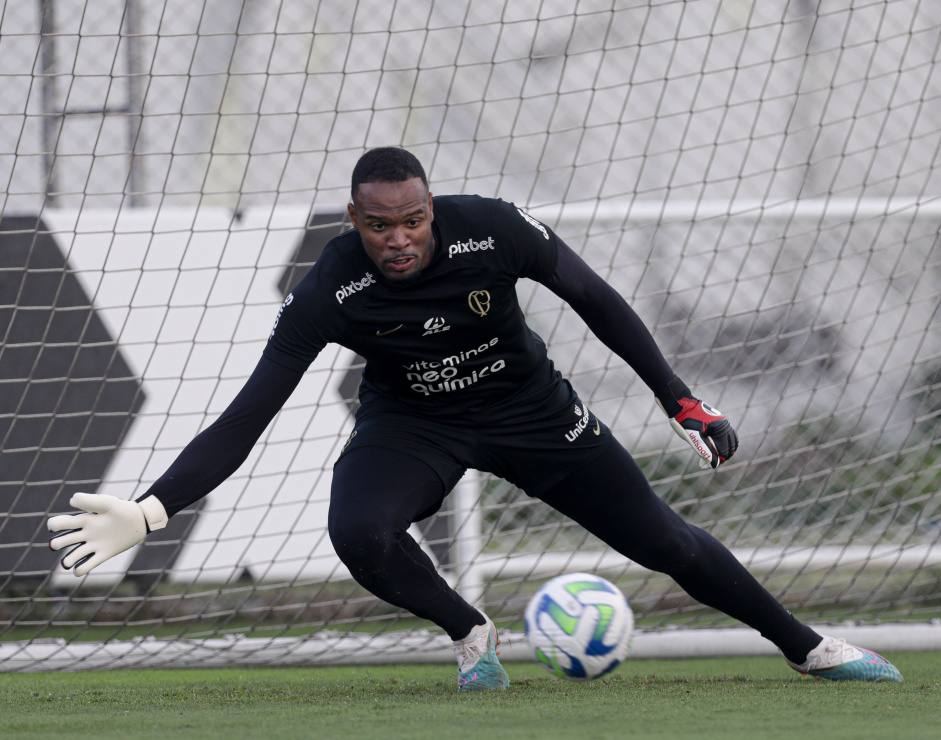
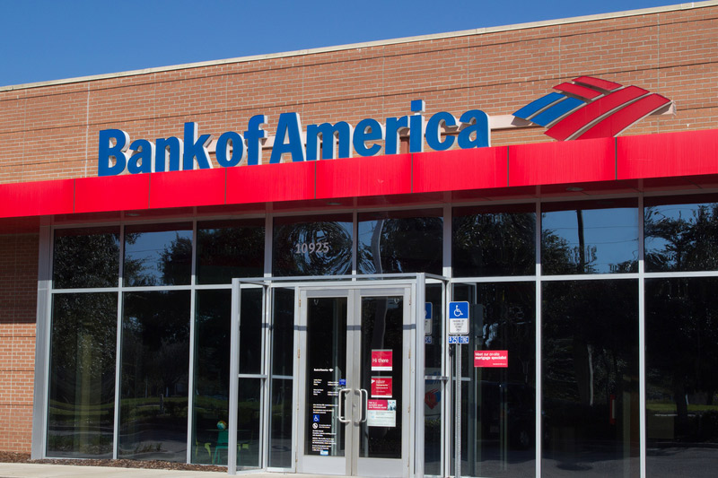

Últimas Notícias
Brasil Urgente dá vexame sem Datena e revela terror da Band
Joel Datena substituiu o pai no Brasil Urgente de quinta (6); segunda pior audiência do ano...
Ler MaisDelegado cita 2ª empresa em nome de 'laranja' e põe Corinthians como potencial vítima em 'caso VaideBet'

Pascoal diz que Corinthians 'só tem uma solução' e opina: 'Se não acontecer, vai ser difícil'
Ler MaisPRESIDENTE DO CORINTHIANS DESMENTE PROPOSTAS POR CARLOS MIGUEL E AFIRMA: 'O MENINO ESTÁ FELIZ AÍ'
Augusto Melo, presidente do Corinthians, negou qualquer proposta para o goleiro Carlos Miguel…
Ler MaisCONFIRA A ÚNICA OPÇÃO DE TRANSMISSÃO DO JOGO ENTRE CORINTHIANS E ATLÉTICO-GO PELO BRASILEIRÃO
CONFIRA A ÚNICA OPÇÃO DE TRANSMISSÃO DO JOGO ENTRE CORINTHIANS E ATLÉTICO-GO PELO BRASILEIRÃO...
Ler MaisBank of America defende que PIB do Brasil vai surpreender de novo em 2024
Chefe de análises do banco americano para Brasil e América Latina, David Beker, diz que crescimento melhorou com alta do PIB potencial.
Ler Mais